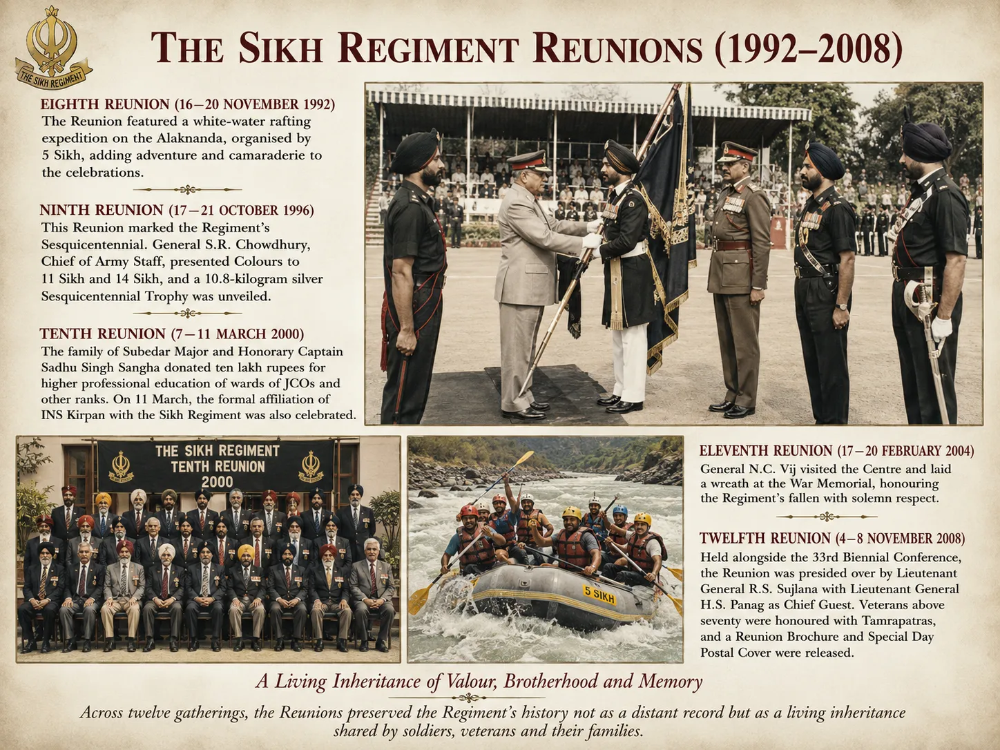

नई मील के पत्थर


शीर्षक: New Milestones
श्रेणी: New Milestones
कलाकार: सिख रेजिमेंटal Centre
वर्ष: ऐतिहासिक
श्रेणी: New Milestones
कलाकार: सिख रेजिमेंटal Centre
वर्ष: ऐतिहासिक
नई मील के पत्थर
16 से 20 नवंबर 1992 तक आयोजित आठवें पुनर्मिलन में 5 सिखों द्वारा आयोजित अलकनंदा पर एक व्हाइट-वॉटर राफ्टिंग अभियान शामिल था। 17 से 21 अक्टूबर 1996 तक नौवें, रेजिमेंट के सेसक्विसेंटेनियल को चिह्नित किया गया। जनरल एस.आर. थल सेनाध्यक्ष चौधरी ने 11 सिख और 14 सिखों को ध्वज प्रदान किए और 10.8 किलोग्राम चांदी की सेसक्विसेंटेनियल ट्रॉफी का अनावरण किया गया। 7 से 11 मार्च 2000 तक आयोजित दसवें पुनर्मिलन में, सूबेदार मेजर और मानद कैप्टन साधु सिंह संघा के परिवार ने जेसीओ और अन्य रैंकों के बच्चों की उच्च व्यावसायिक शिक्षा के लिए दस लाख रुपये का दान दिया। 11 मार्च को सिख रेजिमेंट के साथ आईएनएस किरपान की औपचारिक संबद्धता का भी जश्न मनाया गया। ग्यारहवां पुनर्मिलन 17 से 20 फरवरी 2004 तक हुआ; जनरल एन.सी. विज ने केंद्र का दौरा किया और युद्ध स्मारक पर पुष्पांजलि अर्पित की। 33वें द्विवार्षिक सम्मेलन के साथ 4 से 8 नवंबर 2008 तक आयोजित बारहवें पुनर्मिलन की अध्यक्षता लेफ्टिनेंट जनरल आर.एस. ने की थी। लेफ्टिनेंट जनरल एच.एस. के साथ सुजलाना पनाग मुख्य अतिथि थे। सत्तर से ऊपर के दिग्गजों को ताम्रपत्र से सम्मानित किया गया और एक रीयूनियन ब्रोशर और स्पेशल डे पोस्टल कवर जारी किया गया। बारह सभाओं में, रीयूनियन ने रेजिमेंट के इतिहास को एक दूर के रिकॉर्ड के रूप में नहीं बल्कि सैनिकों, दिग्गजों और उनके परिवारों द्वारा साझा की गई एक जीवित विरासत के रूप में संरक्षित किया।
16 से 20 नवंबर 1992 तक आयोजित आठवें पुनर्मिलन में 5 सिखों द्वारा आयोजित अलकनंदा पर एक व्हाइट-वॉटर राफ्टिंग अभियान शामिल था। 17 से 21 अक्टूबर 1996 तक नौवें, रेजिमेंट के सेसक्विसेंटेनियल को चिह्नित किया गया। जनरल एस.आर. थल सेनाध्यक्ष चौधरी ने 11 सिख और 14 सिखों को ध्वज प्रदान किए और 10.8 किलोग्राम चांदी की सेसक्विसेंटेनियल ट्रॉफी का अनावरण किया गया। 7 से 11 मार्च 2000 तक आयोजित दसवें पुनर्मिलन में, सूबेदार मेजर और मानद कैप्टन साधु सिंह संघा के परिवार ने जेसीओ और अन्य रैंकों के बच्चों की उच्च व्यावसायिक शिक्षा के लिए दस लाख रुपये का दान दिया। 11 मार्च को सिख रेजिमेंट के साथ आईएनएस किरपान की औपचारिक संबद्धता का भी जश्न मनाया गया। ग्यारहवां पुनर्मिलन 17 से 20 फरवरी 2004 तक हुआ; जनरल एन.सी. विज ने केंद्र का दौरा किया और युद्ध स्मारक पर पुष्पांजलि अर्पित की। 33वें द्विवार्षिक सम्मेलन के साथ 4 से 8 नवंबर 2008 तक आयोजित बारहवें पुनर्मिलन की अध्यक्षता लेफ्टिनेंट जनरल आर.एस. ने की थी। लेफ्टिनेंट जनरल एच.एस. के साथ सुजलाना पनाग मुख्य अतिथि थे। सत्तर से ऊपर के दिग्गजों को ताम्रपत्र से सम्मानित किया गया और एक रीयूनियन ब्रोशर और स्पेशल डे पोस्टल कवर जारी किया गया। बारह सभाओं में, रीयूनियन ने रेजिमेंट के इतिहास को एक दूर के रिकॉर्ड के रूप में नहीं बल्कि सैनिकों, दिग्गजों और उनके परिवारों द्वारा साझा की गई एक जीवित विरासत के रूप में संरक्षित किया।
मोबाइल पर खोलें
अपने फोन पर इस कलाकृति को देखने के लिए स्कैन करें।